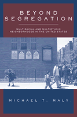

<body bgcolor="#FFFFFF" text="#000000" link="#0000FF" vlink="#CC0000" alink="#CC0000"><center><hr width="350" size="1" align="center" noshade>Sharpening our understanding of urban America's integrated neighborhoods<hr width="350" size="1" align="center" noshade><p><a href="https://cdcshoppingcart.uchicago.edu/Cart/ChicagoBook.aspx?ISBN=9781592131341&&PRESS=temple" target="_top">Buy this book!</a> | <a href="https://cdcshoppingcart.uchicago.edu/Cart/Cart.aspx?PRESS=temple" target="_top">View Cart</a> | <a href="https://cdcshoppingcart.uchicago.edu/Cart/Cart.aspx?PRESS=temple" target="_top">Check Out</a></p><p></p></center><!--none//--><h1>Beyond Segregation</h1>
<H2>Multiracial and Multiethnic Neighborhoods in the United States</H2>
<h3>Michael T. Maly</h3>
<P>cloth 1-59213-134-4 $68.50, Apr 05, <FONT COLOR=#990033>Out of Stock Unavailable</FONT>
<br>paper 1-59213-135-2 $28.95, Apr 05, <FONT COLOR=#990033>Available</FONT>
<br>Electronic Book 1-59213-136-0 $28.95 <FONT COLOR=#990033>Out of Stock Unavailable</FONT>
<BR> 288 pp
6x9
5&nbsp;tables 2&nbsp;map(s) 1&nbsp;figure 22&nbsp;halftones
</P><BLOCKQUOTE><I>"Maly has created a marvelous resource for educators, advocates, and researchers alike. While acknowledging that 'urban space bears a racial stamp,' he examines the basis for stable integration in a variety of fascinating, ever-changing communities. His book will become an important reference point as we search for new models of integration in a society more diverse than any in history."</i>
<br>&#151<b>Xavier de Souza Briggs</b>, Associate Professor of Sociology and Urban Planning, Massachusetts Institute of Technology, and editor of <i>The Geography of Opportunity: Race and Housing Choice in Metropolitan America</i><i></I></BLOCKQUOTE>
<p>At a time when cities appear to be fragmenting mosaics of ethnic enclaves, it is reassuring to know there are still stable multicultural neighborhoods. <i>Beyond Segregation</i> offers a tour of some of America's best known multiethnic neighborhoods: Uptown in Chicago, Jackson Heights (Queens), and San Antonio-Fruitvale in Oakland. Readers will learn the history of the neighborhoods and develop an understanding of the people that reside in them, the reasons they stay, and the work it takes to maintain each neighborhood as an affordable, integrated place to live.
<BR>&nbsp;<h2>Excerpt</h2><P>Excerpt available at <a href="http://www.temple.edu/tempress">www.temple.edu/tempress</a></p>
<BR>&nbsp;<h2>Reviews</h2>
<p><i>"Maly argues that many neighborhoods actually do achieve stable racial integration, and that high rates of immigration suggest that the populations of more and more places will diversify over time. He brings the concept of residential integration into the 21st century by looking closely at the dynamics of multiethnic, multiracial settings, and considering what these places teach us about relevant strategies for improving racial and ethnic relations in the post-Civil Rights era. Maly writes clearly and concisely, and the book is fun to read. </i>Beyond Segregation<i> offers an important corrective to our perceptions of U.S. cities as inevitably and perpetually racially divided."</i>
<br>&#151<b>Mara Sidney</b>, author of <i>Unfair Housing: How National Policy Shapes Community Action</i>
<p><i>"Michael Maly has written a pioneering study of the evolving processes of neighborhood change in U.S. cities. Based on careful fieldwork in Chicago, New York City, and Oakland, </i>Beyond Segregation<i> opens new vistas on race and ethnic relations in our increasingly multicultural urban centers. Maly is attentive to the details of local institutional action and shrewd in his assessment of the connections between neighborhood-level and broader social phenomena."</i>
<br>&#151<b>Larry Bennett</b>, Political Science Department, DePaul University
<p><i>"Readers won't be disappointed ... in the detailed descriptions of the communities or the challenge to conventional thinking on this still volatile subject."</i>
<br>&#151<b><i>Planning</i></b>
<p><i>"Maly's study is one of tempered hope that multiethnicity can be achieved.... This rich approach, however, draws a portrait of challenges and opportunities to which those working toward a truly integrated society can respond."</i>
<br>&#151<b><i>Multicultural Review</i></b>
<p><i>"Michael Maly's interesting new book...reveals the challenges and complexity of contemporary integration.... Maly's case studies present vivid and insightful descriptions of some wonderfully diverse communities and underscore both the role that the latest wave of immigration in playing in their creation and the role that local actors are playing in their longer-term stability."</i>
<br>&#151<b><i>City and Community</i></b>
<p><i>"[Maly's] analysis contradicts research and commonly held perceptions that integration efforts have been failures.... Highly recommended."</i>
<br>&#151<b><i>Choice</i></b>
<p><i>"The recent book by Maly is an example par excellence among...academic sources on this topic.... The success of this book is in part due to its strong ethnographic research and its clever analysis, but the most important element may be Maly's storytelling power. It is an enjoyable as well as an informative book."</i>
<br>&#151;<b><i>Cities</i></b>
<p><i>"Maly provides extensive historical commentary on how different racial and ethnic groups came together….In essence, this book is a statement that race and ethnicity do not have to be the bases for social division in urban community life...Hence, rather than delivering an account of the possibilities for such mixed communities in 21st century America, Maly’s work may best be speaking about how certain kinds of mixed racial landscapes have become palatable for Americans at the end of the twentieth century."
</i><br>&#151;<b><i>The American Journal of Sociology</i></b>
<p><i>"Maly’s interesting book...delves into the complex process of integration and reveals the intricacies and challenges needed to be overcome through three fascinating case studies. Maly’s study of the creation, workings and sustainability of integrated neighborhoods in American cities in </i>Beyond Segregation<i> makes a welcome contribution to the current debates on segregation, multiculturalism, and integration."
</i><br>&#151;<b><i><a href="../reviews/1535_review2.html">Urban Studies</a></i></b>
<p><i>
"Maly articulates a number of important insights into neighborhood functioning, stable unplanned integration, and the roles of grassroots movements that should interest a wide variety of scholars. Beyond the book's value as a piece of research, it is a joy to read and it is highly recommended."</i><br>&#151;<b><i>The Journal of Sociology and Social Welfare</i></b>
<BR>&nbsp;<h2>Contents</h2><P>
<p>Preface
<br>Acknowledgments
<br>Introduction
<br>1. Racial and Ethnic Segregation and Integration in Urban America
<br>2. Changing Demographics, Multiethnic and Multiracial Neighborhoods, and Unplanned Diversity
<br>3. Uptown, Chicago
<br>4. Jackson Heights, New York
<br>5. San Antonio-Fruitvale, Oakland
<br>Conclusion
<br>Notes
<br>References
<br>Index
</P><BR>&nbsp;<H2>About the Author(s)</H2>
<table><tr><td valign="top"><img src="/tempress/authors/1535_au.gif" height="90" width="75"></td><td width="100%" valign="middle"><p><b>Michael T. Maly</b> is Associate Professor and Chair of the Department of Sociology at Roosevelt University in Chicago.</P></td></tr></table>
<BR><H2>Subject Categories</H2>
<p><A HREF="/tempress/urban.html" TARGET="_top">Urban Studies</a>
<BR><A HREF="/tempress/race.html" TARGET="_top">Race and Ethnicity</a>
<BR><A HREF="/tempress/sociology.html" TARGET="_top">Sociology</a>
</p>
<p align="center"><a href="https://cdcshoppingcart.uchicago.edu/Cart/ChicagoBook.aspx?ISBN=9781592131341&&PRESS=temple" target="_top">Buy this book!</a> | <a href="https://cdcshoppingcart.uchicago.edu/Cart/Cart.aspx?PRESS=temple" target="_top">View Cart</a> | <a href="https://cdcshoppingcart.uchicago.edu/Cart/Cart.aspx?PRESS=temple" target="_top">Check Out</a></p><p><font face="Arial" size="1"><a href="copyright.html" onMouseOver="window.status='Web Copyright Policy';return true;" onMouseOut="window.status=''" title="Web Copyright Policy">&copy;</a> 2015 <a href="http://www.temple.edu" target="new" onMouseOver="window.status='Link to Temple University home page';return true;" onMouseOut="window.status=''" title="Link to Temple University home page">Temple University</a>. All Rights Reserved. http://www.temple.edu/tempress/titles/1535_reg.html</font></p>